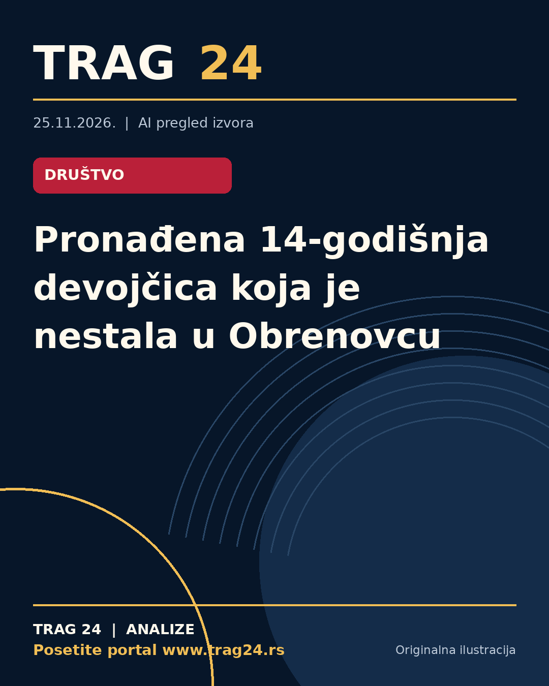

Pronađena 14-godišnja devojčica koja je nestala u Obrenovcu

ŠTA SE DOGODILO
Četrnaestogodišnja devojčica Božica Ajeti nestala je 23. novembra u Obrenovcu, kada se udaljila iz Osnovne škole 'Jovan Jovanović Zmaj' u nepoznatom pravcu. Zbog njenog nestanka pokrenut je sistem 'Pronađi me' kojim policija aktivno traga za nestalim osobama.
HRONOLOGIJA
Devojčica je nestala u jutarnjim satima 23. novembra iz škole u Obrenovcu. Nakon intenzivne potrage i aktiviranja sistema 'Pronađi me', policijski službenici su je pronašli narednog dana u Sremskoj Mitrovici, u Bulevaru Konstantina Velikog.
ŠTA NAVODE IZVORI
Iz MUP-a Srbije je zvanično saopšteno da je devojčica pronađena živa i zdrava u Sremskoj Mitrovici. Mediji navode da je za nestanak bilo aktivirano nekoliko policijskih operativnih mera, uključujući i komunikaciju sa javnošću putem društvenih mreža. Nije otkriven razlog zbog kog se udaljila iz škole.
ŠTA JE POTVRĐENO
Potvrđeno je da je Božica Ajeti pronađena živa i zdrava u Sremskoj Mitrovici dan posle njenog nestanka, što je saopšteno iz Ministarstva unutrašnjih poslova Srbije. Sistem 'Pronađi me' je aktiviran u njenom slučaju kao deo protokola za potragu za nestalim osobama.
ŠTA NIJE POTVRĐENO
Iz dostupnih izvora nije potvrđeno zašto je devojčica otišla iz škole ili gde je tačno provela vreme dok je bila nestala. Nema informacija o eventualnoj ulozi trećih lica ili razlozima njenog nestanka.
ŠTA OSTАJE OTVORENO: Ostaje nepoznato šta je bio motiv udaljavanja devojčice i da li će biti pokrenute dalje istrage ili mere podrške za nju i njenu porodicu. Takođe, nije poznato da li je planirano dodatno praćenje i zaštita dece u sličnim situacijama.
Izvori
- https://www.danas.rs/vesti/drustvo/nestala-bozica-ajeti-u-obrenovcu/
- https://www.euronews.rs/srbija/aktuelno/253674/pronadena-devojcica-koja-je-nestala-juce-u-obrenovcu/vest
- https://www.b92.net/info/drustvo/288038/devojcica-koja-je-nestala-u-obrenovcu-pronadjena-ziva-i-zdrava-u-sremskoj-mitrovici/vest
Ova analiza je pripremljena uz pomoć veštačke inteligencije na osnovu javno dostupnih izvora. Navodi izvora nisu nužno nezavisno potvrđeni.